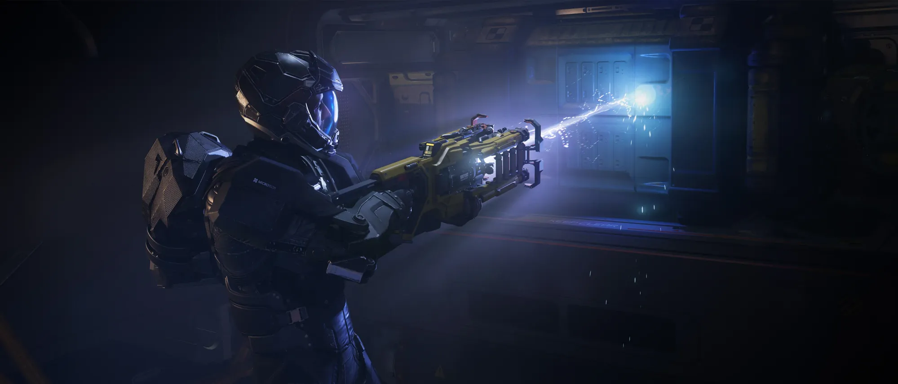
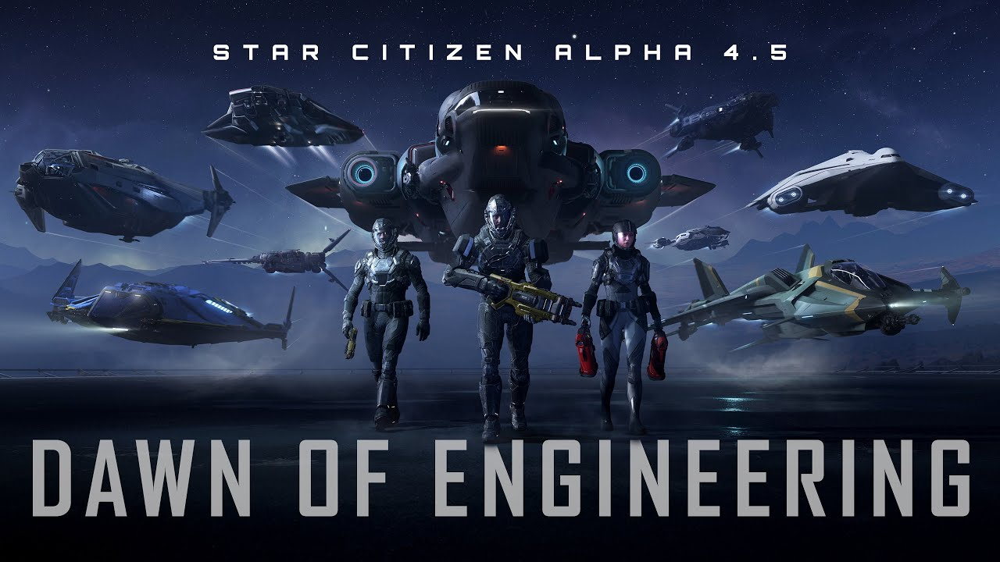
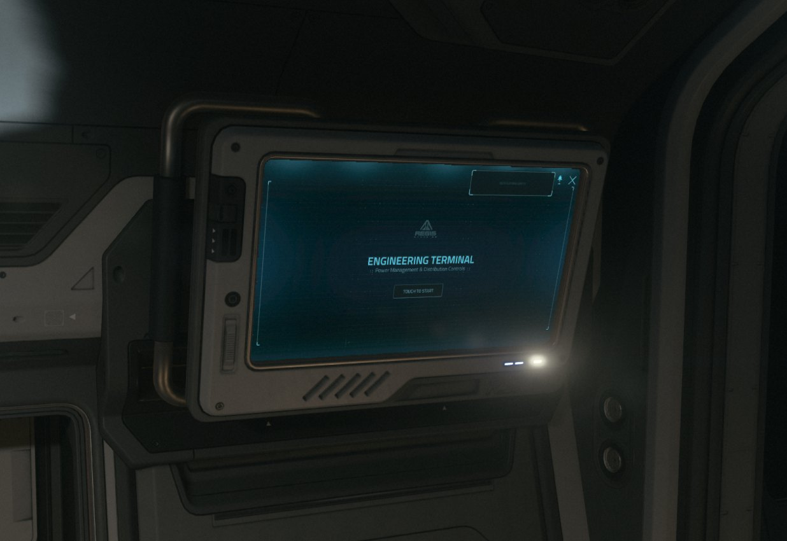
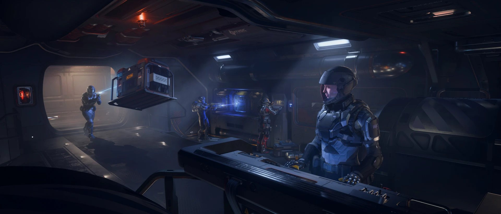

Das Schiff wird zum SchlachtfeldEngineering
Mit 4.5.0 wird der Schiffsbetrieb selbst zum Gameplay: Energie verteilen, Panzerung managen, Braende loeschen — wer im Gefecht ueberlebt, haelt sein Schiff am Laufen.
Schilde fallen, Komponenten brennen durch, Energie wird knapp. In 4.5.0 entscheidet nicht mehr nur, wie gut du fliegst — sondern wie gut du dein Schiff im Gefecht am Leben haeltst.
Der Maschinenraum wird zum Cockpit
An einem Engineering-Terminal ueberwachen Spieler den Zustand ihres Schiffs in Echtzeit — und reparieren beschaedigte Komponenten direkt waehrend des Betriebs. Was bisher unsichtbar im Hintergrund lief, wird zur aktiven Aufgabe an Bord.
Im Mehrspieler-Schiff entsteht so eine eigene Rolle: Waehrend die einen fliegen und feuern, haelt der Ingenieur Reaktor, Schilde und Antrieb am Laufen. Schiffe werden vom Werkzeug zur Crew-Erfahrung.
Schutz & Gefahr
★ Ship Armor
- Eigene physische Schicht ueber Huelle und Komponenten.
- Absorbiert eingehenden Schaden, bevor er die Struktur erreicht.
- Verschleisst mit der Zeit — Panzerung ist endlich.
- Macht Schadensmanagement zur strategischen Entscheidung.
⚠ Feuer-Hazard
- Feuer breitet sich dynamisch durchs Schiff aus.
- Frisst Sauerstoff — die Atmosphaere an Bord wird zur Gefahr.
- Greift auf benachbarte Raeume ueber, wenn man nichts tut.
- Muss aktiv geloescht werden — von selbst geht es nicht aus.
Krisenmanagement an Bord
Treffer einstecken
Eingehendes Feuer trifft zuerst die Ship Armor. Die Panzerschicht absorbiert den Schaden — doch mit jedem Treffer verschleisst sie weiter.
Lage ablesen
Am Engineering-Terminal zeigt sich, welche Komponenten beschaedigt sind, wo Energie fehlt und wo es bereits gefaehrlich heiss wird.
Brand bekaempfen
Bricht ein Feuer aus, frisst es Sauerstoff und greift auf Nachbarraeume ueber. Es muss aktiv geloescht werden, bevor sich der Brand durchs Schiff frisst.
Reparieren & weiter
Beschaedigte Komponenten werden in Echtzeit repariert, Energie neu verteilt — und das Schiff bleibt im Kampf. Wer das beherrscht, ueberlebt.
Fliegen kann jeder. Am Leben halten ist die Kunst.Dawn of Engineering · Alpha 4.5.0
Energie wird in Echtzeit auf die Komponenten verteilt — mehr Leistung fuer Schilde, Triebwerke oder Waffen, je nach Lage. Doch Ueberlastung fuehrt zu Hitze, Ausfaellen und Schaeden. Wer alles auf einmal will, riskiert, dass nichts mehr funktioniert.
Ab 4.5.0 ist Vulkan der Standard-Renderer und loest DirectX 11 ab — die API gibt es im Spiel bereits seit 3.23. Auf dieser Pipeline baut die neue, experimentelle VR-Unterstuetzung auf: ein erster Schritt, das Verse durch die Brille zu erleben.
Media

⤢
⤢
⤢
⤢Quelle: offizieller Star-Citizen-YouTube-Kanal & Star Citizen Wiki (© Cloud Imperium Games). Inoffizielle Fan-Aufbereitung.